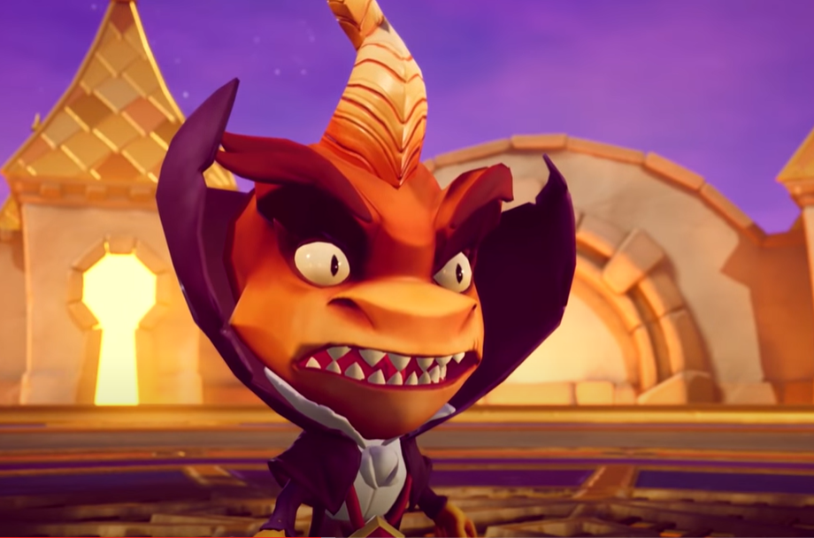
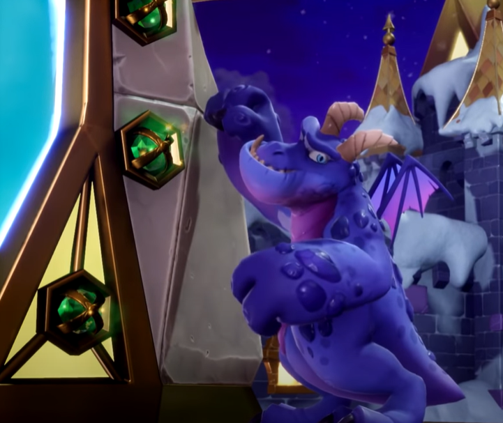
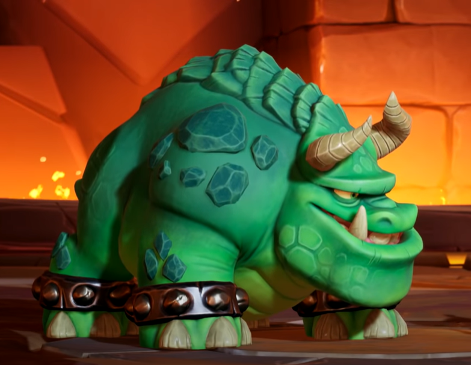
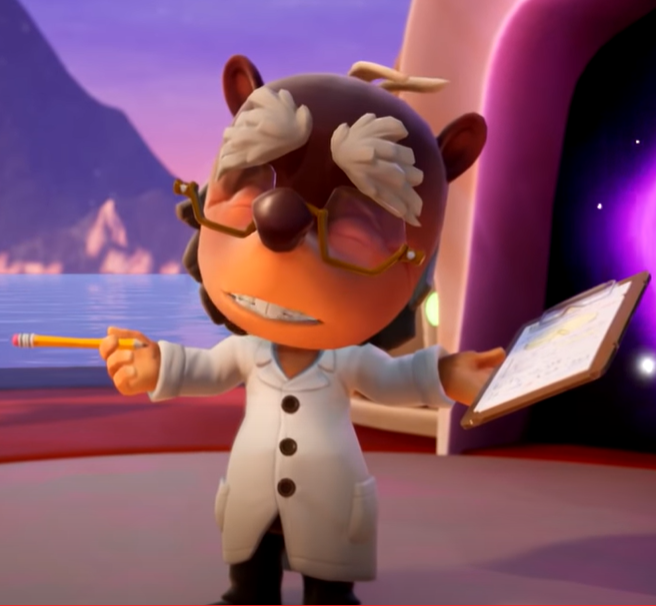
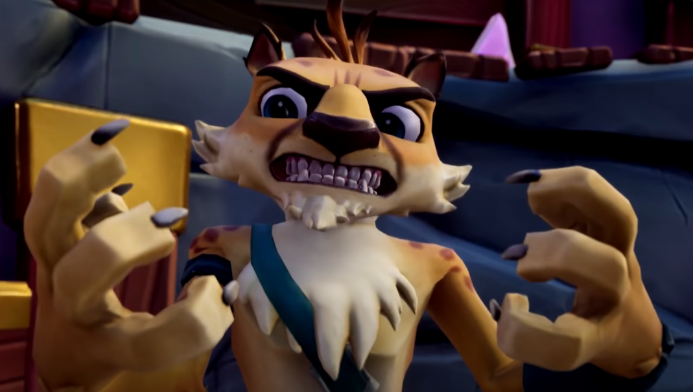
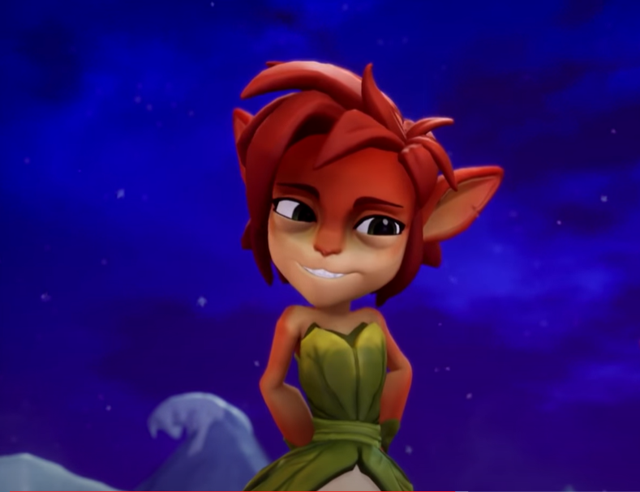

Avalar -niminen maailma on pulassa! Ripto ja hänen ei-niin-älykkäät kätyrinsä ovat ottaneet vallan. Ripto sattuu mainitsemaan, ettei hän pidä lohikäärmeistä, joten Avalarin asukkaat päättävät kutsua sellaisen apuun. Toisaalla, Spyro haluaa mennä lomalle Dragon Shoresiin, mutta suunnitelmiin tulee muutos, kun portaali heittääkin hänet sen sijaan Avalariin, tarkemmin ottaen Glimmeriin. Avalarin asukkaat sanovat hänelle, että hän pääsee lomalle vasta, kun Ripto on päihitetty.
Pelin tavoitteena on tietenkin kerätä jalokiviä ja niiden lisäksi myös talismaaneja Avalarin asukkailta, maagisia orbeja sekä häätää Ripto Avalarista.

Ripto
Spyro 2:n loppuvastus. Tämä pieni, mutta sitäkin julmempi tyranni saapui Avalariin kätyreineen Hunterin möhläyksen seurauksena. Hän tykästyi paikkaan, koska siellä ei ollut lohikäärmeitä, joita hän vihaa ja päättikin muuttaa Avalariin ja kurjistaa asukkaiden elämää siellä. Lopulta Spyro saatiin apuun ja kiihkeän taistelun päätteeksi Ripto putosi laavaan.
Mutta kuten kaikki superpahikset, Ripto selviytyi laavasta ja on sen jälkeen ollut mukana useammassa Spyro -pelissä. Riptoa voikin kutsua Spyron arkkiviholliseksi.
Hauska fakta: Ripto on saanut nimensä Spyro the Dragon -pelin japaninkielisestä nimestä, jossa merkit näyttävät muodostavan sanan Ripto.

Crush
Toinen Ripton aivottomista kätyreistä ja pelin ensimmäinen pomovastus. Tykkää nuijia kaikkea, mikä liikkuu. Myös itseäänkin.
Pieni rooli Spyro: Enter the Dragonfly -pelissä.

Gulp
Pelin toinen pomovastus. Hieman älykkäämpi kuin Crush. Jos tämä mastodontti onnistuu nielaisemaan jotain, sitä ei enää takaisin saa.
Kuten Crushilla, myös Gulpilla on pieni rooli Spyro: Enter the Dragonfly -pelissä.

Professor
Klassinen hajamielinen professori. Auttoi saamaan Spyron Avalariin avuksi Riptoa vastaan. Ei näe mitään ilman lasejaan, joten hänen on paras olla hukkaamatta tai rikkomatta niitä.
Pieni rooli Spyro: Year of the Dragonin loppupuolella, isompi rooli Spyro: A Hero's Tailissä.

Hunter
Gepardi, joka luulee itsestään liikoja ja Spyron hyvä ystävä. Kuvan hurjasta ilmeestään huolimatta hän on todellisuudessa pelkuri, joka pujahtaa piiloon pienimmänkin vaaran uhatessa. Tykkää kilpailla ja pelata erilaisia pelejä Spyron kanssa.
Jonkun verran roolia Year of the Dragonissa ja saamme ajoittain ohjailla häntä. Pieni rooli Enter the Dragonflyssä. Pelattava hahmo A Hero's Tailissä.
Yksi kolmesta pelattavasta Spyro -pelisarjan hahmoista Crash Team Racing: Nitro-Fueled -pelissä Spyron ja Gnasty Gnorcin lisäksi.

Elora
Eloran ja Spyron välillä on ihastusta ilmassa. Elora on fauni (muistakin se, senkin dorka). Ei vaan, kukaan teistä ei ole dorka. Elora vain sanoi Spyroa sellaiseksi, kun hän kysyi, onko Elora jokin vuohi.
Pieni rooli Year of the Dragonin lopussa, jonka jälkeen Eloraa ei ole näkynyt missään pelissä.
Moneybags
Moneybags... Tähän hahmoon varmasti jokaisella on jonkinlainen viha-rakkaussuhde. Tämä pohatta nyhtää jalokiviä Spyrolta milloin milläkin tekosyyllä. Lopussa palauttaa jalokivet Spyrolle Hunterin pakottamana. Moneybags saa jatkuvasti köniin Riptolta ja Year of the Dragonissa Spyron ystäviltä. Edellämainitussa pelissä on tyydyttävä hetki, kun saamme lopussa ajaa häntä takaa ja ottaa jalokivemme takaisin.
Todella pieni rooli Enter the Dragonflyssä, isompi rooli A Hero's Tailissä, jossa hän myy kaikenlaista kivaa, jalokivimaksua vastaan tietysti.